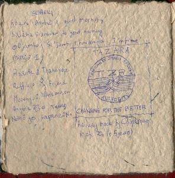

|
|
|
|
Only this morning I realized how nice of a night last night was. As we are travelling more and more to the north, the temperatures get hotter and hotter. this past night was not as good as the last one, bacause we kept on stopping. Dean was telling me that we probably covered 5 miles the whole night. He was trying to sleep on a chair at the bar, because after having attempted to sleep in the lounge, and having being kicked out, he even got locked out of his cabin, while his girlfriend, Joe, who was in a different one, got in hers, and slept.
|  |
| The TAZARA train logo, as seen by my crooked eye. On the left, some notes on Swahili, the unofficial but local and not written (they use english charachters, and English became the official national language, but everyone speaks Swahili, and not everyone speaks English) language of Tanzania and Kenya. |
And the journey started to get long. And we were supposed to be in Dar es Salaam at 15, but then it quicky became 16, then 18, then 20:30, but then the locomotive brokedown like 1 hour before arrival. Luckily, the engineers were able to repair, and we only lost about 30 minutes or maybe one hour.
I calculated the trip to have lasted about 54 hours (excluding loco brakedown) and the distance covered was about 1800km, which makes our average velocity 33.3km/h. That's about 20mph. If I biked it, without stopping, it would probably take me that long.... Oh well, but it was great.
Arriving in Dar es Salaam (Haven of Peace, Arab) was also great. The four of us decided to take a cab together to this hotel called Zanzibar Hotel, reccomended by a Dutch to Dean. Getting off the train was crazy: it looked like people exiting the stadium after a football match. The train had about 20 wagons by the time we got to Dar (it kept on getting longer and longer along the way) and 3rd class was packed, I mean packed, a tiny little more than Italian train packing, in that this one was a 2.5 days packed journey, not a few hours one.
So I inevitably lost my party, which I found back again just before the exit to wild Dar. The "taxi driver" first tried to put all in the trunk, but my backpack would not fit, so I sat in front with it, and they squished inthe back. The car started, but the experinced travelers noticed that the trunk was not able to shut properly and were scared that somebody might walk by at a traffic light and just steal the lot. The driver, of course, insister that it was OK, but we stopped, took all the luggage inside the car and proceeded with the back seats that looked like a pile of lggage. I mean, not that it wasn't, but what I am trying to sayis that the passangers were totally covered by them luggages.
So we arrived to the Zanzibar Hotel, but it was totally full, so we tried another one, which was full too. People were crowding up around our car suggesting first this hotel, then this other. Eventually we were able to find a place by following this duded who apparently worked at the hotel, and said it was around the corner. Well, in fact it was: first we had to cross the street, alkt between building on dirt roads, then on the main steet again, then bhind a builiding. And sure enought, the place existed. I was very sceptical about the existance of this hotel, but in fact it'snot too bad. Again the expertese of who has been travelling for 6 month can be seen.
I was very surprised at how they were moving fast: See, when I find myself in such sitations, where you are pressured to find a place to stay, I used to move really fast too. But then I read the Douglas Adams hitchiker's Guide to the Galaxy and learned "don't Panic". And from that moment, I started moving slower, the more I am in trouble. See, the slower you move, the more in control you are but not only of your movements, but of movements of others. You have time to scan left and right and knowwhere everybody is. It is a lot harder for someone to pop out of nowhere, or for you to trip onto something.
But the brits didn't seem to know about Adams, altough they grew up ij the same nation.
I took a shoewr, ate some granola bars and will go to bed now... 6/18/01 0:26
| Previous | Home | Next |
{kind=link}